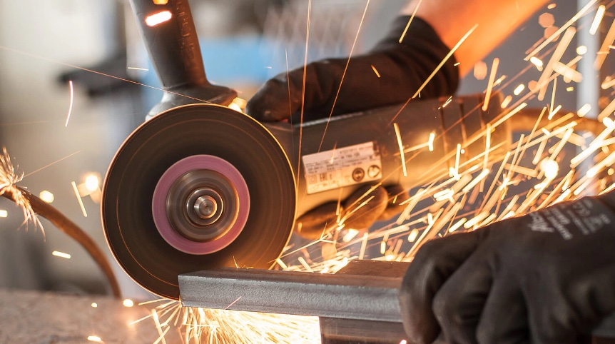

The complete precision manufacturing consumable partner.
K-Precision, trusted partner in high-performance precision manufacturing consumable parts. Specializes in delivering superior-quality industrial solutions designed to meet the rigorous demands of modern manufacturing.
Our innovative manufacturing technologies

Precision-engineered for optimal material removal and surface finish.
Advanced vitrified, resin, and hybrid diamond/CBN bonds engineered for high-feed profile grinding. Eliminates workpiece thermal damage, micro-cracking, and wheel loading while delivering sub-micron mirror surface finishes (Ra < 0.05 µm) across tungsten carbide, structural ceramics, PCD/PCBN, and hardened alloy steels up to 68 HRC.
High-durability tooling designed for accuracy and longevity.
Formulated with ultra-fine sub-micron tungsten carbide substrates (< 0.5 µm) and multi-layer nano-composite coatings (AlTiN, AlCrN, nACo). Delivers extreme wear resistance, chip evacuation efficiency, and edge retention under high thermal and mechanical loads in 5-axis aerospace, medical, and die/mold milling.
Reliable clamping and interface solutions to maintain setup rigidity.
High-rigidity thermal shrink fit and precision hydraulic clamping interfaces engineered to eliminate harmonics and tool runout (≤ 0.003 mm at 3×D). Maintains dynamic spindle balance up to G2.5 at 30,000 RPM, preventing premature tool wear, chatter, and dimensional deviations in tight-tolerance parts.
Premium discharge wires delivering exceptional precision and speed.
Premium high-tensile brass and specialized zinc-diffused coated wires (tensile strength 900–1000+ N/mm²). Ensures outstanding thermal conductivity, zero brass flaking, and automatic wire re-threading reliability. Accelerates cutting speeds up to 25% while maintaining laser-straight perpendicularity in deep mold cavities.
Essential equipment and replacement components to keep your production lines running seamlessly.
High-performance dielectric filters (3–5 µm), mixed-bed deionizing resins, precision ER/SK collets, coolant delivery nozzles, and machine wear components. Prevents unexpected spindle or generator downtime, stabilizes processing environments, and maintains continuous 24/7 manufacturing uptime.
Three-Stage In-House Inspection Protocol
Every consumable batch undergoes strict geometric verification before dispatch, accompanied by certified inspection reports.
Raw Substrate Spectrometry & Grain Verification
Verifying cobalt binder distribution, tungsten carbide grain homogeneity (< 0.5 µm), micro-hardness (HV30), and raw steel acoustic integrity.
Multi-Axis CNC Optical Profile Scanning
Non-contact 3D laser digitizing of flute rake angles, clearance relief, corner radii, and concentricity at sub-micron resolutions.
Dynamic Spindle Balance & Ultrasonic Cleanliness
Dynamic balancing on dual-plane Schenck equipment, ultrasonic micro-particle degreasing, and hermetic anti-oxidation packaging.
Trusted in High-Requirement Manufacturing
Empowering production lines with repeatable dimensional stability, zero chatter, and extended tool life.
Aerospace & Defense
Inconel, Titanium structural ribs, turbine blisks, and high-temp alloy machining.
Semiconductor & Optics
Silicon wafer chucks, quartz rings, ceramic end-effectors, and optical mould cavities.
Medical & Surgical Devices
Titanium bone plates, pedicle screws, Co-Cr artificial joints, and micro-tools.
Precision Mold & Die
Hardened tool steels (55–68 HRC), mirror finish stamping dies, and wire EDM cavities.
Automotive & EV Powertrain
EV rotor shafts, transmission housings, aluminum battery trays, and high-speed milling.
Energy & Heavy Precision
High-pressure valve blocks, deep-hole drilling for oil & gas, and heavy CNC tooling.